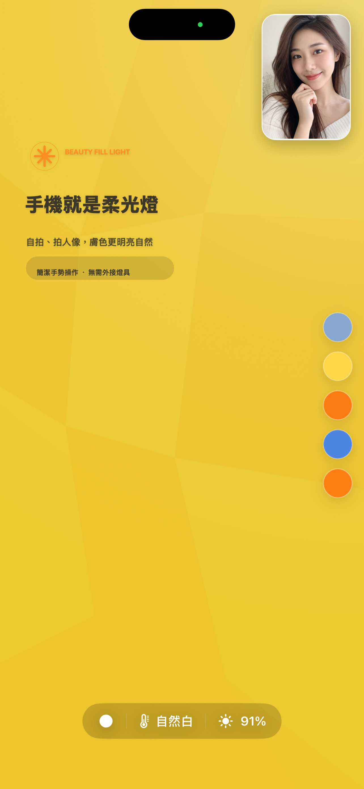
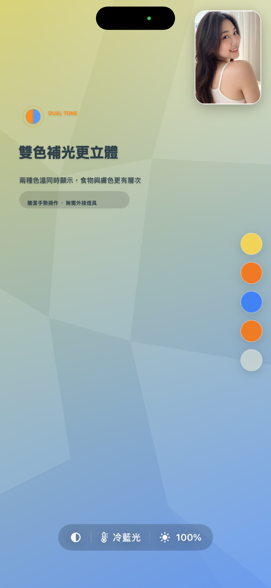

一開啟就是補光燈
螢幕就是光源。左右滑動調整冷暖色溫，上下滑動調整亮度，一邊看前鏡頭預覽，一邊找到適合自己的光線。
冷暖色溫與亮度
從冷藍、自然白到暖黃、紅暖光，配合環境與膚色調整螢幕補光。
前鏡頭小窗預覽
調光時即時查看上臉效果。需要完整補光面板時，可點一下隱藏預覽，重新開啟 App 後恢復。
雙色補光與收藏
切換單色或雙色光線，長按儲存常用補光設定，最多收藏 5 組。
- 自拍補光
- 視訊補光
- 人像柔光
- 商品拍攝補光
- 桌面螢幕燈
看看實際補光畫面
以下為目前 App Store 1.0.1 的產品截圖，呈現前鏡頭預覽、色彩選擇與亮度控制。


iPhone 補光常見問題
適合近距離、臨時補光。螢幕亮度與距離會影響效果，不能取代大型專業燈具。
如何把 iPhone 當成自拍補光燈？
開啟 App，用前鏡頭小窗確認光線，調整亮度與色溫。也可用第二支 iPhone，把亮起的螢幕放在拍攝鏡頭旁作補光。
可以用於夜間視訊或直播嗎？
可以用作外部光源：在另一支 iPhone 開啟 App，放在電腦或視訊裝置的鏡頭旁。不是讓同一支手機在背景持續顯示補光面板，也沒有內建視訊通話或直播功能。
可以替商品近拍補光嗎？
可將手機螢幕靠近桌面小物，用另一部相機拍攝。調整距離、亮度及色溫，觀察陰影與反光的變化。